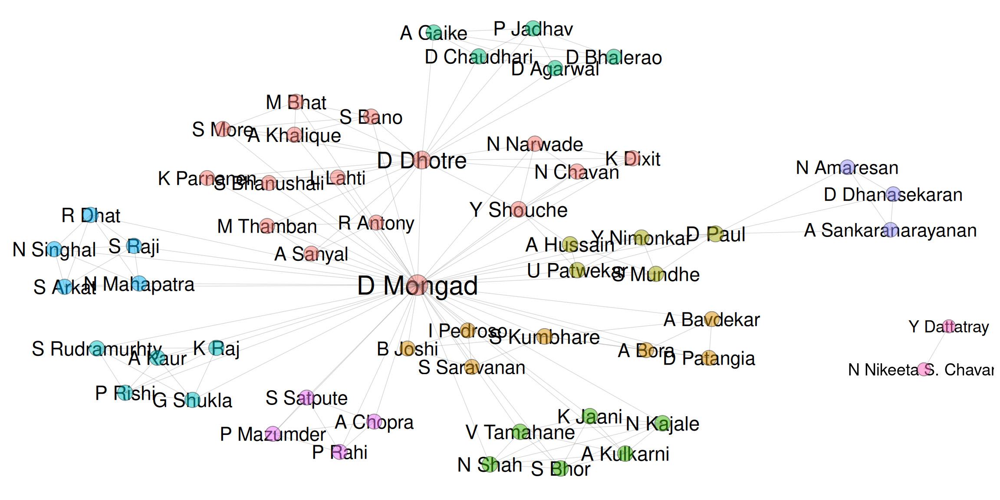

Publications
Research articles
2024
Antony, Runa, Dattatray Mongad, Aritri Sanyal, Dhiraj Dhotre, and Meloth Thamban. “Holed up, but thriving: Impact of multitrophic cryoconite communities on glacier elemental cycles.” Science of the Total Environment 933 (2024): 173187.
Hussain, Aehtesham, Umera Patwekar, Dattatray S. Mongad, Yogesh Nimonkar, Swapnil Mundhe, Dhiraj Paul, Om Prakash, and Yogesh S. Shouche. “Functional antagonism and insights into the biosynthetic potential of human gut-derived microbes.” International Journal of Antimicrobial Agents (2024): 107091.
2023
Shah, Nikhil, Abhijit Kulkarni, Dattatray Mongad, Kunal Jaani, Neha Kajale, Vaishali Tamahane, Shital Bhor et al. “Pilot Study on Gut Microbiota Profile in Indian Children with Type 1 Diabetes.” Indian Journal of Endocrinology and Metabolism 27, no. 5 (2023): 404-409.
Chopra, Ankita, Dattatray Mongad, Surekha Satpute, Pranab Behari Mazumder, and Praveen Rahi. “Quorum sensing activities and genomic insights of plant growth-promoting rhizobacteria isolated from Assam tea.” World Journal of Microbiology and Biotechnology 39, no. 6 (2023): 160.
Dhat, Rohini, Dattatray Mongad, Sivarupa Raji, Silpa Arkat, Nitish R. Mahapatra, Nishant Singhal, and Sandhya L. Sitasawad. “Epigenetic modifier alpha-ketoglutarate modulates aberrant gene body methylation and hydroxymethylation marks in diabetic heart.” Epigenetics & Chromatin 16, no. 1 (2023): 12.
Hussain, Aehtesham, Umera Patwekar, Dattatray S. Mongad, and Yogesh S. Shouche. “Strategizing the human microbiome for small molecules: Approaches and perspectives.” Drug Discovery Today 28, no. 2 (2023): 103459.
2022
Raj, Khem, Praveen Rishi, Geeta Shukla, Shivaprakash M. Rudramurhty, Dattatray S. Mongad, and Amrita Kaur. “Possible contribution of alternative transcript isoforms in mature biofilm growth phase of Candida glabrata.” Indian Journal of Microbiology 62, no. 4 (2022): 583-601.
Pedroso, Inti, Shreyas Vivek Kumbhare, Bharat Joshi, Santosh K. Saravanan, Dattatray Suresh Mongad, Simitha Singh-Rambiritch, Tejaswini Uday et al. “Mental health symptom reduction using digital therapeutics care informed by genomic SNPs and gut microbiome signatures.” Journal of Personalized Medicine 12, no. 8 (2022): 1237.
2021
- Mongad, Dattatray S., Nikeeta S. Chavan, Nitin P. Narwade, Kunal Dixit, Yogesh S. Shouche, and Dhiraj P. Dhotre. “MicFunPred: A conserved approach to predict functional profiles from 16S rRNA gene sequence data.” Genomics 113, no. 6 (2021): 3635-3643.
2020
- Chaudhari, Diptaraj S., Dhiraj P. Dhotre, Dhiraj M. Agarwal, Akshay H. Gaike, Devika Bhalerao, Parmeshwar Jadhav, Dattatray Mongad et al. “Gut, oral and skin microbiome of Indian patrilineal families reveal perceptible association with age.” Scientific Reports 10, no. 1 (2020): 5685.
- Kumbhare, Shreyas V., Dhrati V. Patangia, Dattatray S. Mongad, Abhijeet Bora, Ashish R. Bavdekar, and Yogesh S. Shouche. “Gut microbial diversity during pregnancy and early infancy: an exploratory study in the Indian population.” FEMS Microbiology Letters 367, no. 3 (2020): fnaa022.
Book chapters
- Mongad, Dattatray S., Nikeeta S. Chavan, and Yogesh S. Shouche. “Computational Techniques Used for Microbial Diversity Analysis.” In Microbiome-Host Interactions, pp. 21-35. CRC Press, 2021.
Preprints
- Bano, Shehnaz, Shyam More, Dattatray S. Mongad, Abdul Khalique, Dhiraj P. Dhotre, Manoj K. Bhat, and Vasudevan Seshadri. “Prolonged exposure to insulin causes epigenetic alteration leading to insulin resistance.” bioRxiv (2022): 2022-04.